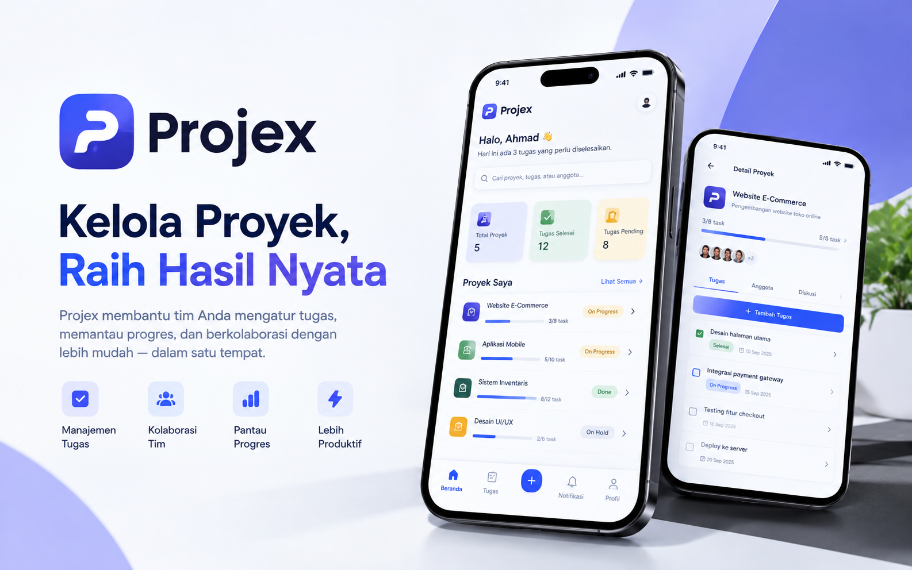
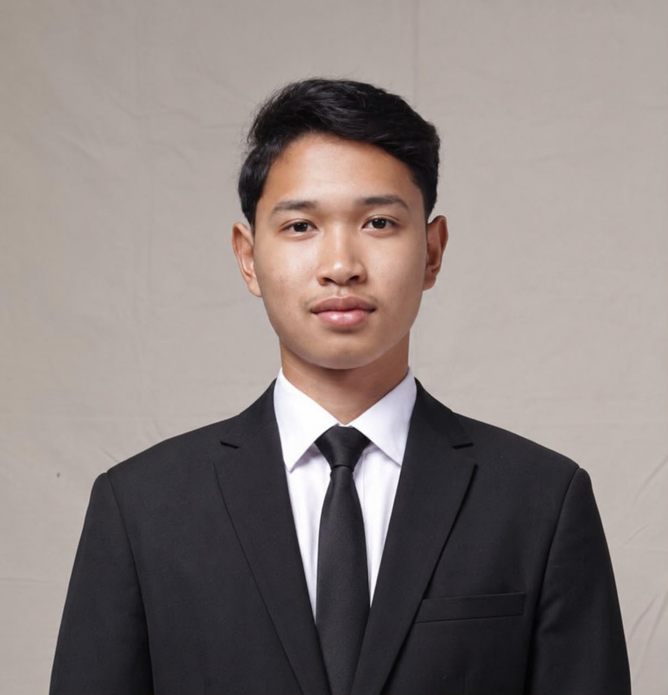
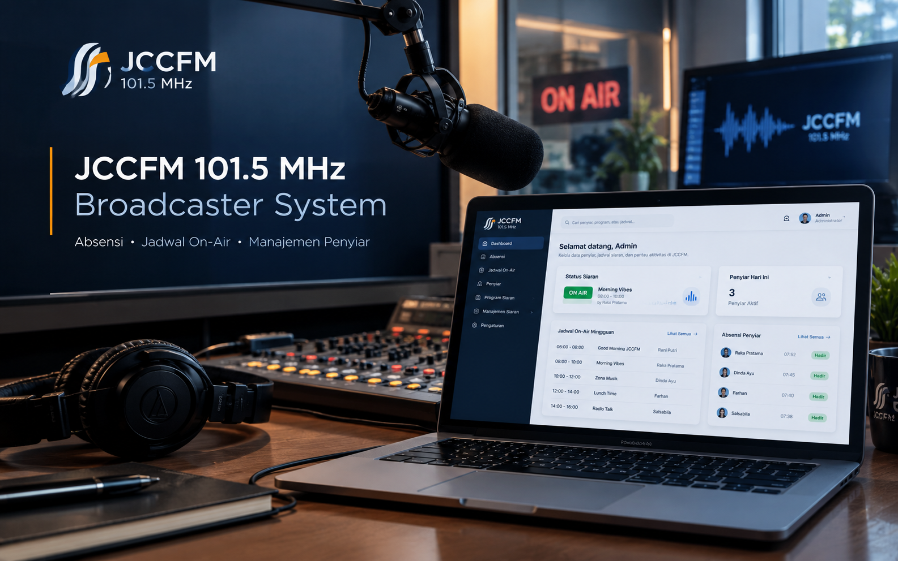
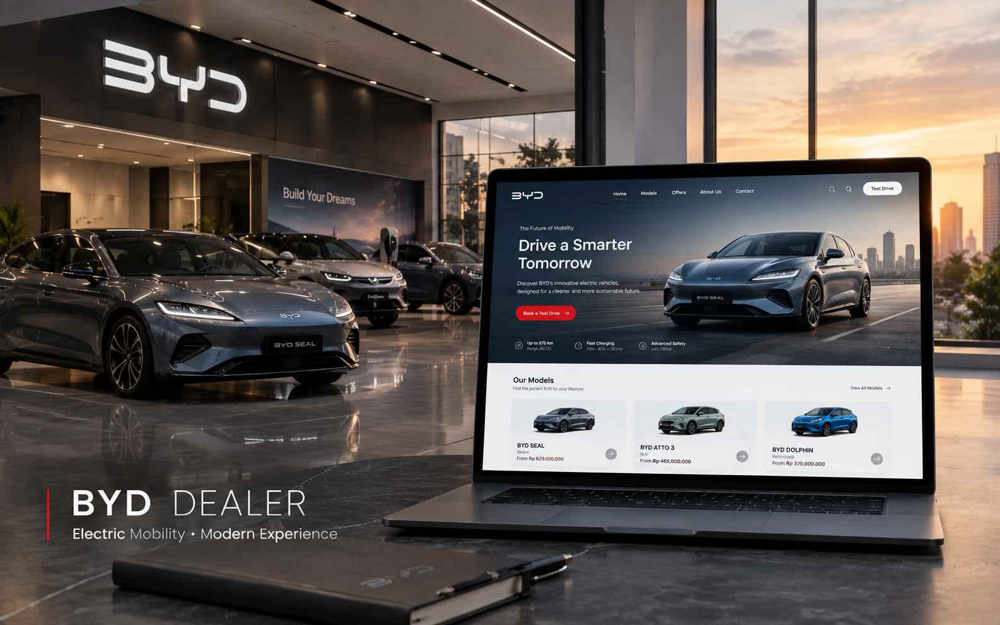

Projex — Project Management Platform
Aplikasi dan platform manajemen proyek terintegrasi untuk membantu tim mengatur tugas harian, memantau progres pekerjaan, dan berkolaborasi secara efisien dalam satu wadah.
Informatics Engineering Student & Web Developer
Mahasiswa Teknik Informatika di Politeknik Elektronika Negeri Surabaya yang berfokus pada pengembangan aplikasi web, arsitektur backend kokoh, dan integrasi basis data modern.
Latar belakang, fokus keahlian, dan dedikasi saya dalam rekayasa perangkat lunak serta pengembangan web.

Mahasiswa Teknik Informatika • Politeknik Elektronika Negeri Surabaya
Saya adalah mahasiswa Teknik Informatika di Politeknik Elektronika Negeri Surabaya dengan minat yang kuat pada bidang backend development, pengembangan aplikasi web, sistem basis data, dan rekayasa perangkat lunak.
Saya memiliki pengalaman praktis dalam merancang dan membangun proyek akademik maupun komersial/freelance menggunakan teknologi seperti PHP, PostgreSQL, MySQL, C, JavaScript, React, serta pengelolaan RESTful API dan alur deployment modern.
Bagi saya, perangkat lunak yang unggul memadukan stabilitas arsitektur backend, optimasi query basis data yang efisien, serta antarmuka pengguna yang bersih dan fungsional.
Saya senantiasa antusias mempelajari teknologi baru, memecahkan masalah komputasi secara logis, serta berkolaborasi secara adaptif dalam tim untuk menghasilkan solusi digital yang bermanfaat.
Merancang skema relasi database terstruktur (PostgreSQL, MySQL), optimasi query, dan REST API yang aman serta mudah diintegrasikan.
Membangun antarmuka modern yang cepat, ramah pengguna di berbagai perangkat, dan terhubung mulus dengan logika backend.
Terbiasa menganalisis kebutuhan klien/pengguna, menyusun solusi teknis yang teruji, dan terus memperluas wawasan teknologi terkini.
Kumpulan bahasa pemrograman, framework, dan perangkat lunak yang saya kuasai dan terapkan.
Proyek web dan sistem aplikasi yang telah saya kembangkan untuk kebutuhan akademik maupun klien.

Aplikasi dan platform manajemen proyek terintegrasi untuk membantu tim mengatur tugas harian, memantau progres pekerjaan, dan berkolaborasi secara efisien dalam satu wadah.

Sistem manajemen penyiaran berbasis web full-stack untuk pengelolaan absensi, jadwal siaran on-air, manajemen penyiar radio, dan pemantauan aktivitas stasiun secara responsif.

Website dealer otomotif modern dan responsif untuk menampilkan jajaran kendaraan listrik (EV), spesifikasi interaktif, galeri mobil, dan integrasi kontak langsung ke tim sales.
Riwayat kontribusi profesional freelance, pengalaman organisasi kepanitiaan, dan latar belakang pendidikan.
Mengembangkan website yang responsif dan modern untuk klien dan proyek pribadi. Membangun antarmuka interaktif dengan HTML, CSS, JavaScript, dan React. Mengelola alur kerja mandiri mulai dari perumusan kebutuhan, perancangan fitur, pengujian, revisi, hingga deployment hosting di platform seperti Vercel. Berkolaborasi langsung dengan klien untuk menerjemahkan kebutuhan bisnis menjadi solusi website yang fungsional dan ramah pengguna.
Membantu perencanaan dan penyiapan kebutuhan operasional pemilihan Ketua Himpunan Mahasiswa Teknik Informatika (HIMIT). Berkoordinasi lintas divisi kepanitiaan, mengelola logistik, peralatan, dan monitoring operasional agar pemilu terselenggara secara lancar dan tertib.
Mengedit video promosi, dokumentasi, dan liputan acara sekolah. Berkolaborasi bersama tim media serta mengelola pascaproduksi video: pemotongan, penyesuaian warna, sinkronisasi audio, dan final rendering.
Mengoordinasikan perencanaan, persiapan, dan distribusi konsumsi bagi panitia, tamu undangan, serta peserta acara demi kelancaran alur acara.
Fokus studi: Dasar Pemrograman, Struktur Data & Algoritma, Sistem Basis Data, Pemrograman Web, Pemrograman Berorientasi Objek (OOP), Jaringan Komputer, Sistem Operasi, Desain UI/UX, Cloud Computing, dan Pemrograman Mobile.
Menempuh peminatan Matematika dan Ilmu Pengetahuan Alam dengan fokus pada pemikiran analitis dan partisipasi aktif dalam kompetisi sains.
Ajang Kompetisi Sains Indonesia (AKSI) 2022 — Tingkat Nasional.
Ajang Kompetisi Sains Indonesia (AKSI) 2022 — Tingkat Nasional.
Ajang Kompetisi Sains Indonesia (AKSI) 2022 — Tingkat Nasional.
Predikat Jayyid Jiddan (Sangat Baik) — SMAU BP Amanatul Ummah.
Punya pertanyaan, tawaran proyek freelance, magang, atau ingin berkolaborasi? Hubungi saya melalui formulir atau kontak langsung di bawah ini.
Anda dapat menyalin alamat surel berikut atau mengirimkan pesan langsung:
Telepon / WhatsApp: +62 821 2373 5445
Lokasi: Surabaya, Jawa Timur, Indonesia